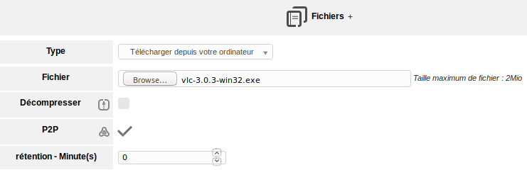
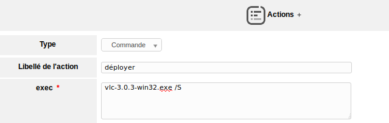
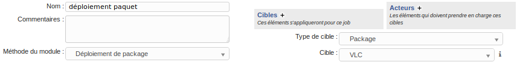

Déploiement d'une application
Le déploiement d'applications nécessite au préalable une GPO fonctionnelle et le module de déploiement actif sur les agents. Pour activer ce module, il convient de se rendre dans Administration > FusionInventory et Général > Configuration Générale > Modules des agents puis de cocher "Déploiement du paquet".
Le déploiement des applications va pouvoir se faire sur toutes les machines en même temps ou bien en sélectionnant un ordinateur en particulier.
Le déploiement d'une application peut se faire via P2P ou par le paramétrage de serveurs miroirs.
Pour associer le paquet à déployer, se rendre dans Administration > FusionInventory puis Déployer > Gestion de paquets. Créer un nouveau paquet en cliquant sur le "+" et lui attribuer un nom. Se rendre sous l'intitulé "Actions sur le package" et dans "Fichiers" ajouter l'application à déployer. Il est possible de télécharger le paquet depuis l'ordinateur courant ou depuis le serveur. Si nécessaire, cocher le P2P et l'extraction.

Il est maintenant nécessaire d'exécuter des commandes pour installer le logiciel. Toujours sous l'intitulé "Actions sur le package", se rendre dans "Actions" et demander le déploiement silencieux, avec l'option /S.

Afin de déployer sur toutes les machines, une nouvelle tâche doit être créée. Sous l'onglet Tâches de FusionInventory instaurer une nouvelle tâche de déploiement dont le job prendra pour cible le paquet créé précédemment et dont les acteurs seront les postes sur lesquels déployer.
